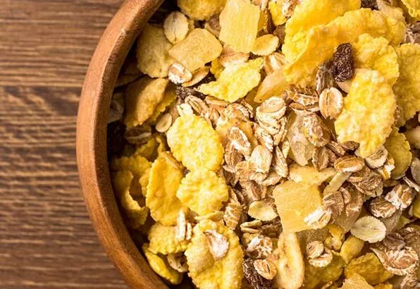

Posasız ve lifsiz beslenmenin zararları
Bağırsak hastalıkları ve makat hastalıkları üzerine önemli başarılara imza atan Proktoloji Uzmanı Op. Dr. Mert Atak,lifsiz ve posasız beslenmenin insan sağlığında; özellikle bağırsak hastalıkları üzerine oldukça önemli hastalıklara neden olduğunu vurguladı

Bağırsak hastalıkları ve makat hastalıkları üzerine önemli başarılara imza atan Proktoloji Uzmanı Op. Dr. Mert Atak,lifsiz ve posasız beslenmenin insan sağlığında; özellikle bağırsak hastalıkları üzerine oldukça önemli hastalıklara neden olduğunu vurguladı.
Gündelik yaşamımızda almamız gereken lifler bağırsak içinde bir Hacim oluşturarak sıvı kaybını azaltıp içine sıvı çekmesi sayesinde dışkımızı yumuşak tutmaya sağlamaktan ve bu sayede tüm bağırsak hastalıklarını ve makat hastalıklarının oluşmasına engellemektedir.
BAĞIRSAĞINIZ ÇATLAR (Divertiküler hastalık)
Posa ve liften fakir beslenme dışkının bağırsak içerisindeki hareketini azaltacağı için oluşan basınç bağırsak duvarında zedelenmeye ve bu nedenle divertiküler hastalık ismi verilen ufak cepçiklere neden olmaktadır bağırsak yüzeyinin çatlaması ile oluşan bu hastalık, hastalarda yaşamını etkileyebilecek önemli problemlere neden olabilmektedir
BAĞIRSAĞIN SON KISMI ÇATLAR (Rektosel-bağırsak fıtığı)
Posasız ve lifsiz beslenme bağırsağımızın son kısmı ile kadın organımız arasındaki doğal bariyerin zedelenmesine, bu nedenlebu bölgede fıtıklara neden olmakta ve rektosel ismi verilen özellikle 40 yaş üstü kadınların ciddi rahatsızlıklarına neden olabilen hastalıklara meyil oluşturmaktadır. Posasız beslenmenin yarattığı bu sonuç bu bariyerin tekrar oluşturulması gibi zorlu ameliyatlara neden olabilmektedir
MAKATINIZ ÇATLAR (anal fissür)
Posasız ve lifsiz beslenme daha önce bahsettiğimiz gibi dışkıda sertleşmeye bu nedenle de makat çıkışı esnasında sert tuvaletini makat çevresinde zarar vermesiyle çatlaklara neden olmaktadır. Analfissür ismi de verilen bu hastalıkta hastalar kısır döngü ile ızdıraplı ağrılı kanamalı bir hastalığa neden olmaktadır. Bu hastalar için tuvalete gitmek ve dışkılamak işkence haline gelmektedir. Sonuçta ufak işlemler ile onlarla bilen bu hastalıkta lifsiz ve posasız beslenme ana etkendir
KARNINIZ ÇATLAR
Lifsiz ve posasız beslenme yüzünden bağırsak Pasajı'ndaki hareketlerde yavaşlama karında şişlik ve uzun süre gaz sancılarını ve karın gerginliğine bağlı karın yüzeyindeki çatlakları neden olmaktadır.
Lifsiz ve posasız beslenmenin neden olduğu tüm bu anlattığımız 4 hastalık, hastalarda uzun süreli sıkıntılara ıstıraplı günleri ve hayat kalitesinin düşmesine neden olmaktadır. Günlük alınması gereken posa ve lif içeriği besin ile alındığı takdirde bu tür bağırsak hastalıkları ve makat hastalıklarına önüne geçilebileceğini belirten Dr. Mert Atak, hastalarımıza tedavi sonrasında özellikle beslenme ve diyet içeriklerinde posa ve lif miktarının arttığı takdirde hastalığın tekrarlama oranının azaldığını ve hastaların memnuniyetlerini belirgin derecede arttığını belirtti.